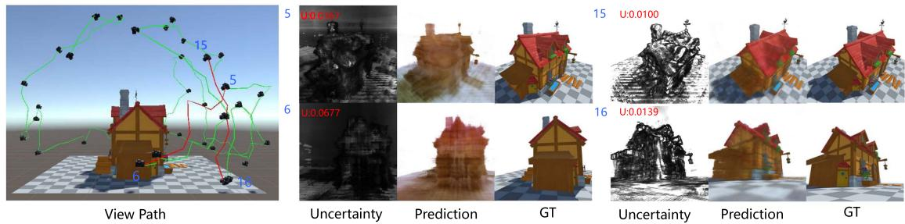
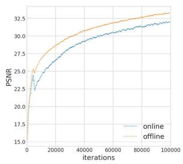

速度数字很硬：在 TUM RGB-D 上达到 19–22 FPS，而 NICE-SLAM 只有 0.028–0.056 FPS——快了约 360–800 倍。这让它第一次把「隐式稠密 SLAM 实时跑」从设想变成工程现实。
原图注（Fig. 1）：Orbeez-SLAM process. The left image shows NeRF result at 27 seconds training from scratch. The right image shows that after seeing the unseen region, our NeRF model can update the region in seconds. Our Orbeez-SLAM is real-time and pre-training-free.
（中译：Orbeez-SLAM 流程。左图是从零训练 27 秒的 NeRF 结果；右图显示看到未见区域后，模型可在数秒内更新该区域。本方法是实时且免预训练的。） 怎么看这张图：① 注意时间戳——左 27 秒、右「数秒更新」，说明它边跑边建、免预训练；② 这正是它「实时、免预训练」主张的视觉证据。
原图注（Fig. 2）：Skip voxel strategy. When sampling positions along a cast ray, a voxel is skipped if it is unoccupied (mark as 0); we sample voxels which intersect the surface (mark as 1).
（中译：Skip voxel 策略。沿投射射线采样时，未占用体素（标 0）被跳过；只采样与表面相交的体素（标 1）。） 怎么看这张图：这是提速关键之一。把射线想象一束光，穿过空气的体素（标 0）整段跳过，只在与表面相交的体素（标 1）采样——省掉大量无效 MLP 查询。
原图注（Fig. 3）：System Pipeline. The tracking and mapping processes run concurrently. A frame must satisfy two conditions to become a keyframe … The tracking process provides camera poses; the mapping process refines the camera poses and the NeRF.
（中译：系统管线。跟踪与建图并发运行。一帧需满足两个条件才成为关键帧……跟踪提供相机位姿；建图精修相机位姿与 NeRF。） 怎么看这张图：这张图讲清「ORB 跟踪线程」与「NeRF 建图线程」如何并发、关键帧如何被筛选（弱跟踪过滤 + 建图忙时丢弃），是理解它工程调度的钥匙。
互动判断
Orbeez-SLAM 是端到端用神经网络一次性估计位姿和地图的吗？
4. 接 0011：深度学习先吃掉匹配与检索
第一季 0011 课（深度学习视觉 SLAM）有一个著名论断：「深度学习先吃掉匹配与检索」——意思是，传统 SLAM 里最依赖手工设计的两块（特征匹配、重识别检索），会最先被学习模型接管。
原图注（Fig. 5）：Comparison of Rendering Results. RGB and Depth of NeRF-rendered results from Orbeez-SLAM (ours) and NICE-SLAM. Notably, we do not use depth information for NeRF rendering in the RGB-D setting.
（中译：渲染结果对比。Orbeez-SLAM 与 NICE-SLAM 的 NeRF 渲染 RGB 与深度。注意在 RGB-D 设置下，NeRF 渲染不使用深度信息，深度只用于跟踪。） 怎么看这张图：看它比 NICE-SLAM 更清晰的渲染，体会「特征法 + NeRF」混合路线的建图质量。注意它 RGB-D 下渲染不用深度——深度只服务于跟踪线程，这再次说明「位姿」与「地图」是解耦的。
原图注（Fig. 3）：Loss curves and linear relationship between log σ²_I and PSNR. PCC value of -1 signifies strong negative correlation.
（中译：损失曲线与 log σ²_I 和 PSNR 的线性关系。PCC = -1 表示强负相关。） 怎么看这张图：① 看 (b) 子图——$\log\sigma_I^2$ 越高，PSNR 越低，二者近似一条直线；② 这就直接证明了「方差能当 PSNR 的代理」，也就是「哪块建得差」可以被量化出来。

原图注（Fig. 1）：View paths planned by NeurAR and the uncertainty maps used to guide the planner. Given current pose 5 and 15, paths are planned toward viewpoints having higher uncertainties, i.e. pose 6 and 16. Uncertainties shown in red text.
（中译：NeurAR 规划的视角路径与用于引导规划器的不确定性图。给定当前位姿 5 和 15，路径被规划朝向不确定性更高的视角，即位姿 6 和 16。不确定性以红字标出。） 怎么看这张图：这张图已经预示了下一节的主题——规划器专挑「红字（高不确定性）」的地方走，主动去补全没建好的区域。
原图注（Fig. 5）：Uncertainty maps from different viewpoints and training iterations. Top: seen viewpoints; Bottom: an unseen viewpoint stays high even when converged.
（中译：不同视角与训练迭代下的不确定性图。上：已见视角；下：未见视角即使收敛仍保持高不确定性。） 怎么看这张图：看「未见视角即使网络收敛仍高不确定性」——这正好说明它的不确定性是真·盲区检测，不是过拟合产物。再次印证：它知道自己的无知。

原图注（Fig. 2）：The pipeline of our method.
（中译：本文方法的管线。） 怎么看这张图：这张图展示「建图 + 不确定性 + 规划」的闭环：建出地图 → 算出不确定性图 → 规划器挑高不确定性视角 → 再去拍。它是主动重建（NBV）的总纲。注意：它假设位姿已知，不含 SLAM 全栈。
互动判断
NeurAR 的「不确定性」主要是用来处理动态物体的吗？
7. 横向对比与诚实标注
Orbeez-SLAM
NeurAR
核心贡献
特征法 + NeRF 的实时隐式 SLAM
把渲染不确定性量化为可学习方差
位姿来源
ORB-SLAM2（自己估）
假设已知（外部提供）
是否处理动态
不处理（假设静态世界）
不处理（不确定性来自视角少）
关键数字
19–22 FPS（比 NICE-SLAM 快约 360–800×）
log σ² 与 PSNR 强负相关（PCC 0.96/0.92）
接 0011 哪句
「深度学习先吃掉匹配与检索」（具体化）
「六个不成熟环节」之置信度 / 概率化
本组判断（非原文自评）
两篇都不是「隐式碰动态」的答案（这点要反复强调）。Orbeez 把隐式 SLAM 第一次跑成实时、免预训练的工程典范，价值在「速度」；NeurAR 把「知道自己不知道」做成可学习信号，价值在「鲁棒性的量化基础」。下一课我们才真正进入「动态三篇」。